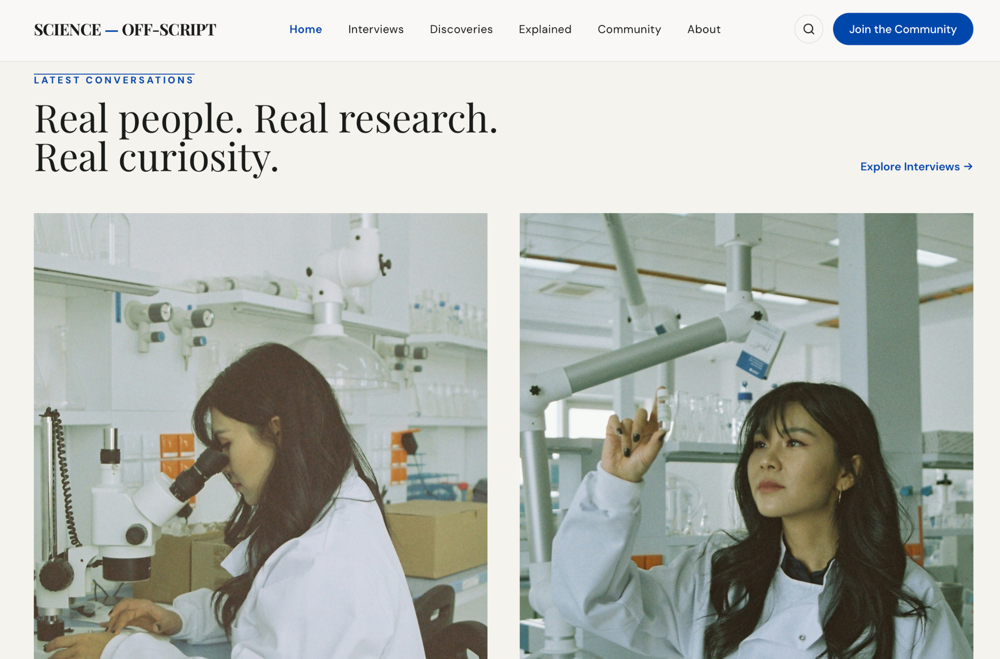
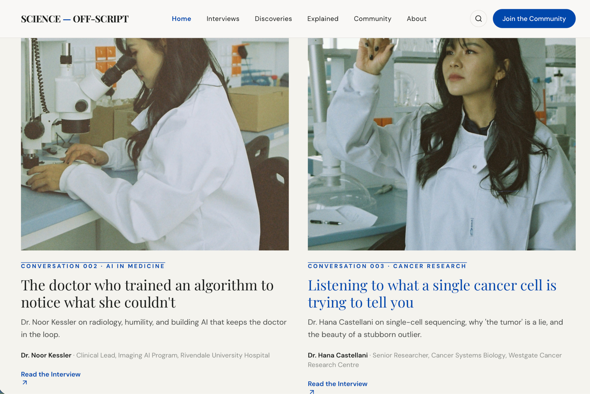

EXPLAINED 001
What happens when we rewrite a gene?
A clear introduction to gene therapy and how scientists are learning to edit the instructions inside our cells.
Read the explanation →EXPLAINED
Complicated ideas, research, and discoveries explained clearly — without losing what makes the science interesting.
LATEST EXPLAINERS
EXPLAINED 001
A clear introduction to gene therapy and how scientists are learning to edit the instructions inside our cells.
Read the explanation →
EXPLAINED 002
An accessible look at how algorithms can help doctors find patterns in medical images.
Read the explanation →
EXPLAINED 003
Understanding single cells can reveal details about diseases that disappear when we only look at an entire tumour.
Read the explanation →